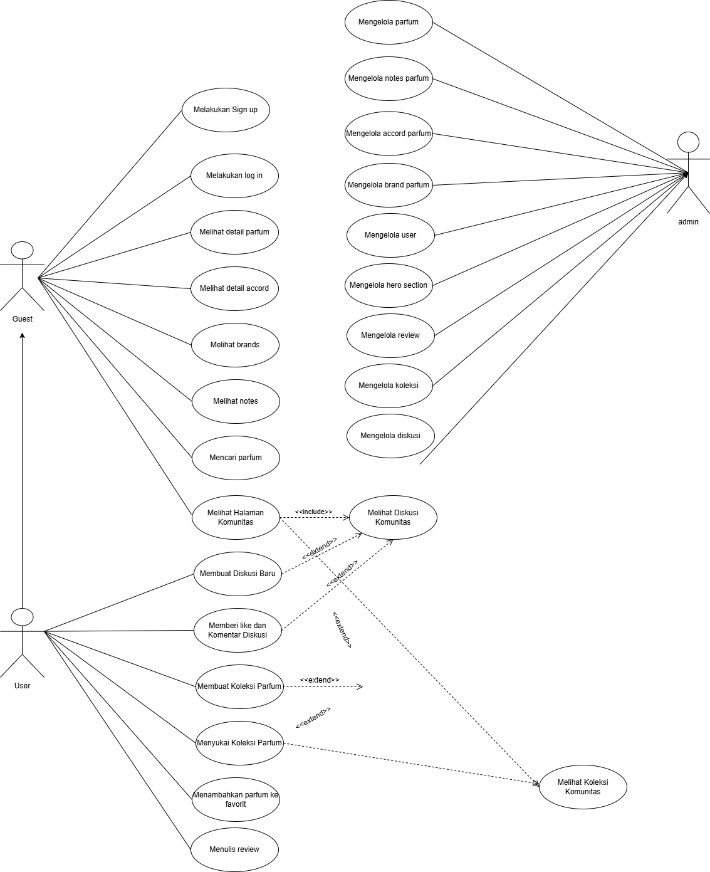
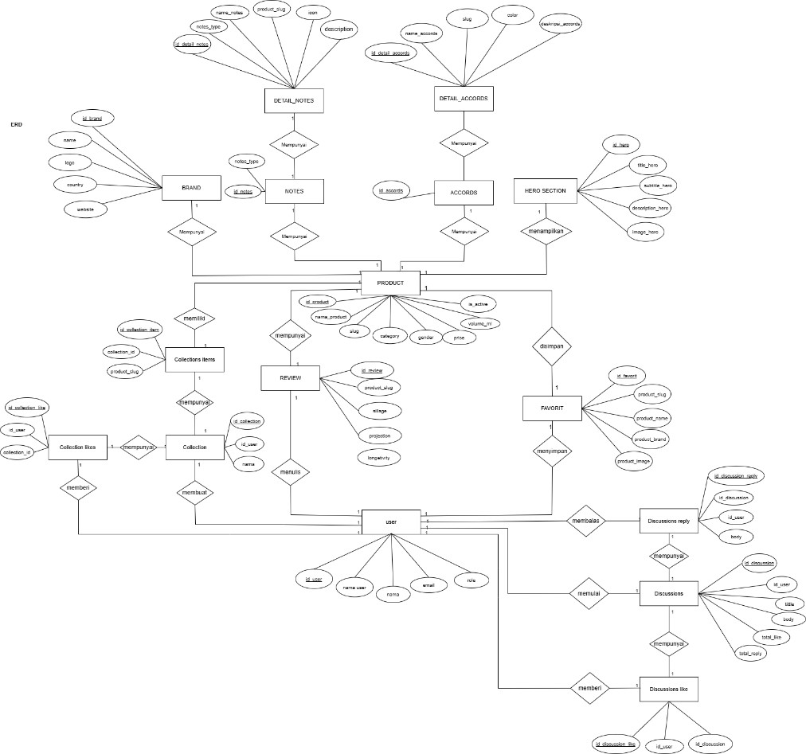
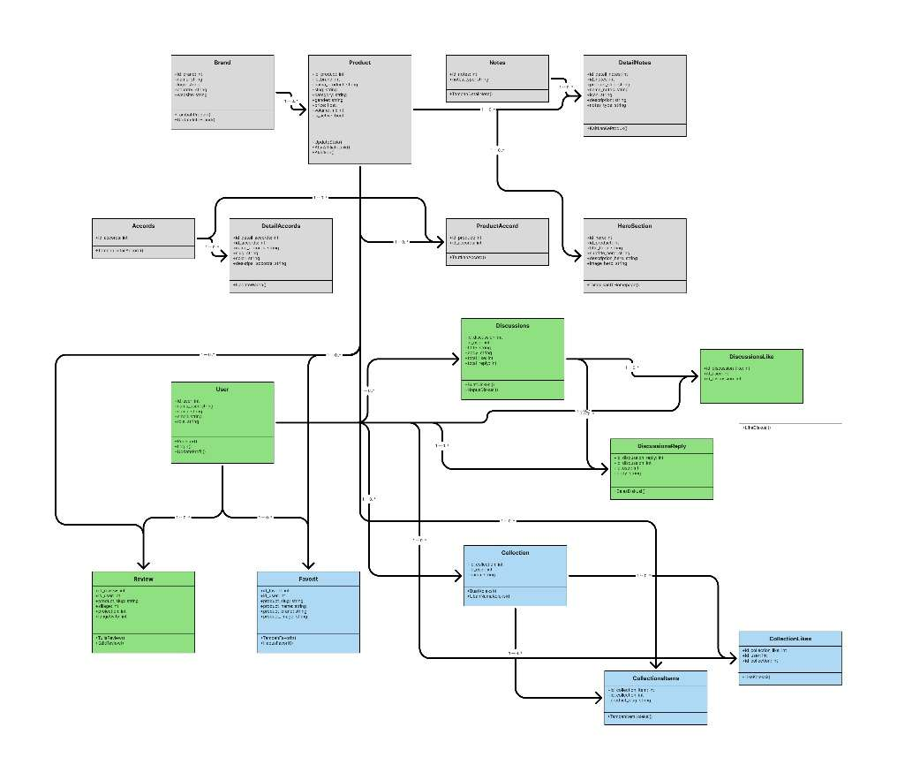
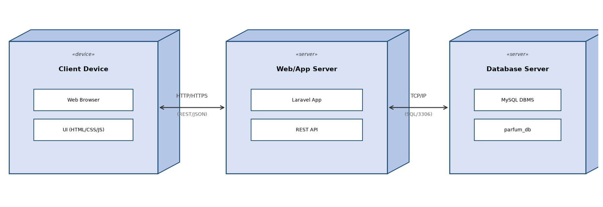

Academic Project · System Analyst & Developer · Tim 3 orang
Parfum.IN: sistem informasi katalog dan review parfum lokal berbasis web.
Visual preview
Tampilan utama aplikasi Parfum.IN.

Fitur utama
- Beranda dinamisHero slide, koleksi night dan day, daftar brand, dan rekomendasi parfum yang isinya diatur dari panel admin.
- Katalog dan pencarianDaftar parfum per brand, halaman detail (notes, accords, harga, volume, gender), dan pencarian berdasarkan nama atau brand.
- Brand, Notes, dan AccordsHalaman daftar dan detail untuk setiap brand, accord, dan kelompok notes (top, middle, base).
- Register, login, dan logoutValidasi email unik, password minimal 8 karakter dengan konfirmasi, dan password disimpan dengan hashing.
- Review parfumPenilaian sillage, projection, dan longevity plus ulasan teks, satu review per user per parfum, ditampilkan beserta rata-ratanya.
- FavoritTambah atau hapus parfum favorit dengan satu klik dan halaman daftar favorit, khusus untuk user yang sudah login.
- KomunitasMembuat diskusi, membalas (termasuk balasan bertingkat), dan memberi like pada diskusi.
- Koleksi parfumMembuat koleksi publik atau privat, mengisinya dengan parfum, dan memberi like. Koleksi privat dan hapus hanya untuk pemilik.
- Profil, follow, dan temaEdit profil dan avatar, follow dan unfollow pengguna lain, daftar followers dan following, serta pengalih tema terang atau gelap.
- Panel admin FilamentCRUD parfum, brand, notes, accords, hero slide, user, dan review, plus dashboard statistik dan laporan data. Hanya bisa diakses admin.
Perancangan sistem




Overview
Informasi parfum lokal tersebar di banyak platform, sehingga pengguna sulit membandingkan produk, sedangkan pengelola belum punya cara mengubah data tanpa menyentuh kode. Parfum.IN dibuat sebagai katalog terstruktur untuk pengguna dan panel admin untuk pengelola.
Project kelompok tiga orang dengan metode Waterfall. Peran saya System Analyst dan Developer: menganalisis kebutuhan, menyusun Use Case, Activity Diagram, ERD, dan Class Diagram, merancang antarmuka di Figma serta basis data MySQL, lalu mengimplementasikannya dengan Laravel dan Filament. Sistem diuji secara lokal dan belum di-deploy.
Pengujian
74 skenario black-box mencakup login, register, katalog, detail produk, pencarian, review, favorit, profil, follow, koleksi, diskusi, dan panel admin. Seluruhnya berstatus valid, termasuk kasus negatif seperti input kosong, email duplikat, akses tanpa login, dan membuka koleksi privat milik orang lain.
Hasil dan pengembangan lanjutan
Aplikasi berhasil menyajikan katalog parfum lokal yang terstruktur dan bisa dikelola admin tanpa mengubah kode. Arsitektur MVC, relasi Eloquent, serta eager loading dan caching menjaga aplikasi tetap efisien.
Rencana berikutnya: transaksi dan pembayaran, rekomendasi berdasarkan notes dan accords favorit, versi mobile, notifikasi produk baru atau diskon, analitik admin, dan uji keamanan berkala.
Aktor
- PengunjungMelihat beranda, katalog, brand, notes, dan accords.
- User terdaftarSemua akses pengunjung, plus favorit, review, diskusi, koleksi, dan follow.
- AdminMengelola seluruh data lewat panel Filament.
Stack
Basis data (16 tabel)
Link